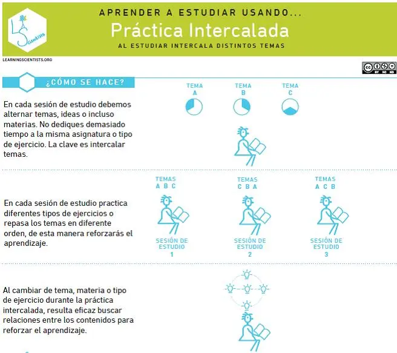

¿En qué consiste?
El Estudio Intercalado es una técnica que consiste en alternar diferentes temas o habilidades durante una misma sesión de estudio, en lugar de enfocarse en una sola área por mucho tiempo. A diferencia del estudio bloqueado (centrado en un solo tema), el intercalado mejora la discriminación entre conceptos, fomenta la memoria a largo plazo y promueve un aprendizaje más profundo.
¿Cómo aplicarlo?
- Elige 2 o más temas relacionados para estudiar.
- Alterna entre ellos en intervalos de tiempo definidos.
- Realiza ejercicios que involucren más de un tema al mismo tiempo.
- Evita estudiar largos periodos de un solo tema de forma aislada.
✔️ Ventajas:
- Mejora la retención a largo plazo.
- Desarrolla habilidades para aplicar conceptos en distintos contextos.
- Fomenta conexiones entre ideas distintas.
❌ Desventajas:
- Puede generar confusión si no se organiza bien.
- No es útil para temas que requieren dominio progresivo lineal.
¿En qué carreras se recomienda?
Es especialmente efectiva en áreas que requieren resolución de problemas y aplicación práctica:
- Matemáticas
- Ingeniería
- Física
- Programación
- Economía
- Ciencias Naturales

Ejemplo visual de cómo alternar entre temas para reforzar el aprendizaje.